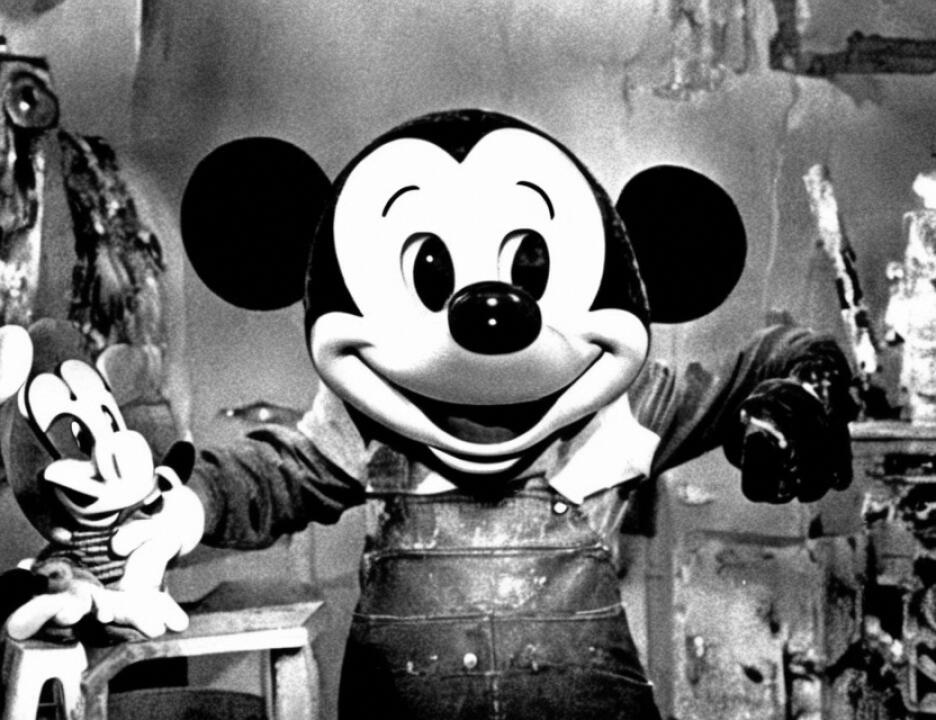

21 Southern District of New York.
22 Mr. Fitzgerald tried to be helpful in some way but it
23 dropped between the cracks. There is no allegation of
24 government misconduct. I believe that a jury could infer from
25 that and other things and along with the political climate
6942
1 that family members were unwilling to cooperate because of
2 fear in a political climate, and I think we have to explain
3 the fact that there are no family members here to set it in a
4 more traditional --
5 THE COURT: How does this explain what the motivation
6 and concerns of Mr. al-'Owahli's family is?
7 MR. COHN: It sets the letters in context, your
8 Honor, because I am not prepared to breach the attorney
9 relationship and testify that the family said that they, it
10 was not to their advantage to come. And I believe a juror
11 could infer from that knowing something about the political
12 climate appellate, that it's not made out of whole cloth that
13 the family was afraid. And that's all it's for. It's not to
14 prove that it's a repressive government. It's for a very
15 limited purpose.
16 THE COURT: You know we know that we have some
17 extraordinarily conscientious jurors. Several of them have
18 postgraduate degree. Several of them are, if not by education
19 or occupation, persons who are extremely literate. It's a
20 marvelous crosssection. I mean every time I look at them I
21 think I compliment the lawyers who exercised their challenges.
22 You got by ethnicity, by socioeconomic standards, by gender
23 you have really a wonderful jury. How long do you think it
24 would take the slowest reader on that jury to read all of the
25 material that you're presenting?
6943
1 MR. COHN: Your Honor, I mean right now we're just
2 talking about the report.
3 THE COURT: That's a question that really calls for a
4 very specific answer.
5 MR. BAUGH: Your Honor, I can tell the Court directly
6 that if I introduce this into evidence as information I
7 introduce it as information in my closing, I can refer to any
8 excerpt in here to offer as explanation for why --
9 THE COURT: Why don't you do that in advance? Why
10 don't you highlight and introduce that?
11 MR. FITZGERALD: I have an objection to substance.
12 He already testified once to the jury about what he --
13 THE COURT: I know I went off on a tangent, but
14 that's particularly thinking of the 250 page book.
15 MR. COHN: The Amnesty International has a very
16 limited function and one of them is just --
17 THE COURT: You are not offering the letters?
18 MR. COHN: We are but --
1